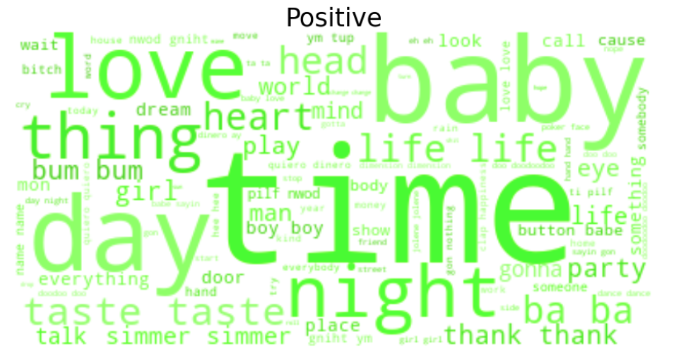
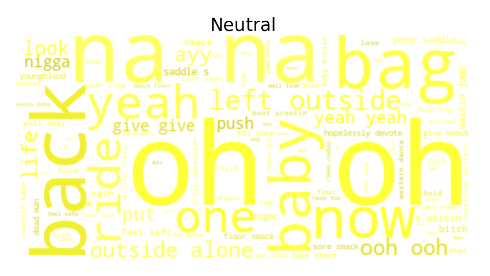
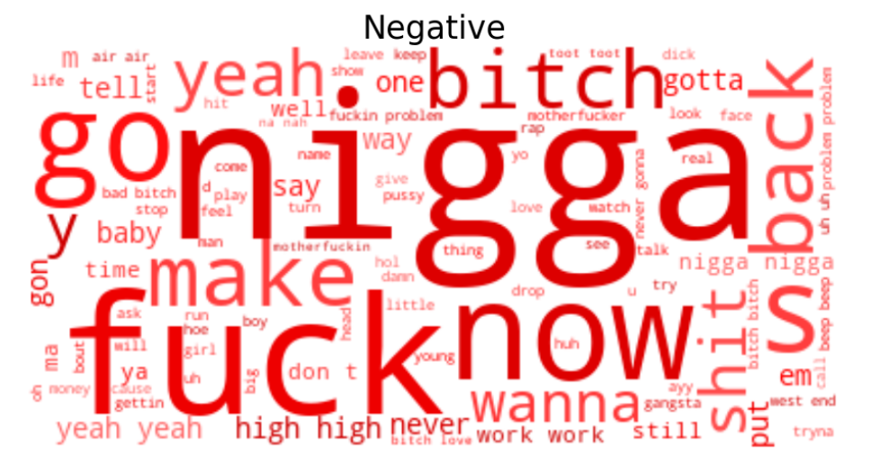

The purpose of sentiment analysis in our study is to get insights into the emotional part of the songs. We start by looking at the overall picture and investigate the distribution of sentiment, revealing whether the top most listened songs provides a positive or negative message. To get a deeper insight the sentiment of each genre is investigated with the aim of revealing if some genres are more more violent/negative than others. Furthermore the study will include an evaluation of the models performance of classifying the sentiment of the songs. In the end we look into the most positive and negative songs and what words that describes the sentiment groups so as to achieve an understanding of what makes a song negative/positive. Hopefully this part of our study will provide knowledge of the emotional state of songs and how the genres differentiates on their sentiment. So that you in the future can chose you playlist depending on your mood.
A sentiment analysis model is a machine learning technique that can classify a text as positive, neutral or negative. Analysing language is called Natural Language Processing (NLP) and contains both sentiment analysis and topic modeling which we will cover in this study. In the sentiment analysis the goal is that the model should understand all kinds of underlying tones in a text. This includes negation, capitalization, linguistic, context, symboles and sarcasm. The model should take these into accounting when classifying the sentiment. An example of a negation that the sentiment model should be able to capture can be seen in the sentence, ”I do not like you”. The word 'like' is normally classified as positive, but due to the linguistic structure the words in front of like namely "I do not" yields negation of like, making the sentence negative.
There exist many sentiment analysis models, all for different purpose and each with their own strength and weaknesses. Due to the often extreme words used in songs the choosen model is Vader. Vader (Valence Aware Dictionary for Sentiment Reasoning), is trained on social media data and is therefore capable of understanding intensity (”!!!”), acronyms (”LOL”) and slang. The model makes a classification based on full sentence structure since it relies on wordorder. The Vader sentiment model calculates a sentiment score (compound score) on the scale [−1;1] and then sets a threshold to classify the text as being positive, neutral or negative. See The Vader Sentiment Model github page for detailed describtion of the model. For this study we use the Vader sentiment classification which are as followed:
positive: sentiment score >=0.5
neutral: -0.5 < sentiment score < 0.5
negative: sentiment score =<-0.5
It is interesting to investigate the overall sentiment of the music industry to obtain an overall picture of whether people like to listen to happy or sad songs. The Vader sentiment analysis has been performed on the data and the distribution of the classes can be seen below.
{% include sentimentdist.html %}There are very few songs classified as neutral, which indicates that music tends to have an extreme polarised sentiment. Whether it is very loving or extremely angry. This indicates that music tries to evoke emotion within the listener. Furthermore the overall picture indicates that most songs are positiv.
It should be noted that the dataset does not contain the whole music industry and that the results only gives a picture of what the industry looks like.
To achieve a deeper understanding of the sentiment distribution each genre will be analyzed. We can then compare the genres and their sentiment to understand how the genres differences. The resulting classification of songs within each genre can be seen below.
{% include sentimentgenre.html %}Based on the plot above some genres clearly tends to have more negative songs while others more positive. As expected Hip Hop (followed by Rock) is the genre with the largest amount of negative songs. Whereas RnB and Pop are the genres with the most positive messages. Consequently there is a clear indication that the tone listeners are exposed to depends on the genre they choose to listen to.
The model is evaluated by looking into the most positive and most negative songs. By reading the lyrics we can evaluate if the songs have been classified correctly and we can thereby get an indication of the models overall performance. If you want to see another evaluation of the model check out The Explainer Notebook where the models performance is evaluated based on random samples of the data across sentiment classes. The results in the notebook shows the same as the following evaluation, namely that the Vader Sentiment Model succeeds in classifying the songs correctly.
Top 3 most positive songs
| Song | Artist | Genre | Sentiment |
|---|---|---|---|
| Girls Like You (Remix) | Maroon 5 | Pop | 0.9999 |
| Mirrors | Justin Timberlake | RnB | 0.9999 |
| thank u, next | Ariana Grande | RnB | 0.9998 |
In the following we will take a closer look at the lyrics of the songs stated in the table above to evaluate if they really do provide positive messages.
This song is about a boy being madly in love with a girl. As the lyrics says, "spending 24 hours together is not even enough for him". There are no doubt that this song has been classified correctly, namely as extreamly positive.
Link to lyrics: Girls like you
The song was inspired by Justin's grandparents’ relationship of 63 years. It is about finding true love and your other half. As he sings, "You reflect me, I love that about you. And if I could, I would look at us all the time". The lyrics includes many positive sentences with love and disire and it is therefore correctly classified.
Link to lyrics: Mirrors
At a first glance of the title "Thank you, next" is kind of ironic and not positive but if you look closer at the lyrics you discover why the sentiment analysis has classified this song as extreamly positive. The song is about learning to love yourself as she sings "I've got so much love... I turned out amazing". This illustrates a correct classification after all.
Link to lyrics: thank u, next
| Song | Artist | Genre | Sentiment |
|---|---|---|---|
| HUMBLE | Kendrick Lamar | HipHop | -0.9997 |
| Cruel Summer | Bananarama | Pop | -0.9996 |
| No Role Modelz | J. Cole | HipHop | -0.9994 |
Once again we will evaluate if these songs has been clasified correctly by looking into the lyrics.
This song is about the conflicting feelings of success. Throughout the song the lyrcis encourage powerful people to be humble and become more down to earth. He sings, “I’m so fuckin’ sick and tired of the photoshop. Show me somethin’ natural like ass with some stretch marks". The song disses the upper class lifestyle and the song is thereby correctly classified as negative.
Link to lyrics: HUMBLE.
The song deals with the darker side of the traditional summer songs. It is about the sadness of being all by oneself when everyone else is on vacation. "It's a cruel, cruel summer. Leaving me here on my own". Indicating a correct classification of the song.
Link to lyrics: Cruel Summer
As this title implies, this song is about J’s lack of role models growing up. Furthermore he attacks Hollywood itself for its focus on superficial people, especially when it comes to women. The lyrics have almost only negative messages and is thereby classified as extreamly negative.
Link to lyrics: No Role Modelz
To summarize the evaluation of the model it can be stated that the performane of the Vader Sentiment Model is very accurate when it comes to classifying songs as positive or negative.
We wish to further investigate what makes a song negative or positive and if some specific words indicates and describes the emotional tone of a song. To do so we look at the wordclouds for each sentiment class. The wordclouds are created based on the top TF-IDF words from the songs within each sentiment group. Hence the wordclouds contains the most distincitive words for each sentiment.

It makes perfectly sence that words like "love", "baby", "heart" and "thank" are a part of the positive wordcloud. These are words that we normally assosiate with a positive message.

As expected the wordcloud for the neutral sentiment class contains words in opposite emotional directions and quite a lot of words with no sentiment orintations.

Finally the wordcloud for the negative sentiment contains words like "fuck", "bitch" and "shit" which clearly indicate a negative message. Furthermore the wordcloud contains the word "nigga" which is not a negative word but a word many Hip Hop artists use in their songs. Their songs often have a negative message causing their lyrics to be a part of the negative wordclouds and thereby also the word "nigga".
This study has extracted meaningful insights into the sentiment and tone of the songs people listen to. The results clearly prove that some genres tend to have more negative messages, which might be worth considering when choosing/creating our next playlist. Furthermore the analysis showed that most of the top listen songs in the network actually provides the listener with happy and positive feelings. In the end the study also showed which words represent positivity and negativity in songs.
For further investigation of the sentiment within the music industry we recommend using a larger dataset with extra genres to provide a more versatile perspective. In addition it would be interesting to choose another sentiment analysis tool to compare the models and their results. On top of that, Vader is trained on social media data, thus is would be interesting to look at the possibility of achieving an even better sentiment model by training the model on song lyrics instead.